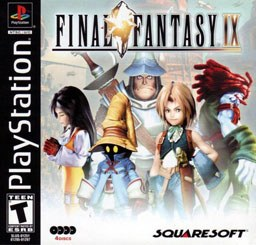
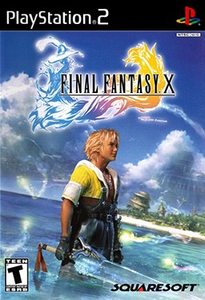
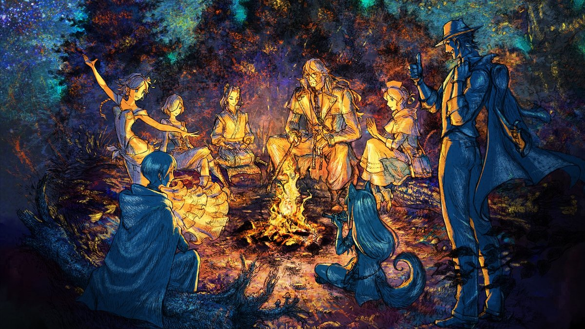

RPG au tour par tour
RPG au tour par tour
Final Fantasy VII
Square · PS1, PC, PS4, Switch, Xbox, mobile
Midgar et au-delà : chaque coffre, chaque Matéria, et les secrets du monde ouvert de fin de partie.
Interligne
Espacement des lettres
Police
RPG au tour par tour · 2000
Quatre disques, du premier coffre aux dernières quêtes annexes : trésors, Chocobos et tout ce qui peut se rater.

Calculé à partir des cases que tu as cochées dans le guide, sur cet appareil.
Clique sur une partie pour l'ouvrir directement dans le guide. Les compteurs suivent les cases que tu coches.
RPG au tour par tour
Square · PS1, PC, PS4, Switch, Xbox, mobile
Midgar et au-delà : chaque coffre, chaque Matéria, et les secrets du monde ouvert de fin de partie.

RPG au tour par tourSquare · PS3, PS Vita, PS4, PC, Switch, Switch 2, Xbox One
Le pèlerinage de Spira temple par temple, puis les armes ultimes, les Chimères purgatrices et le Sphérier.

RPG au tour par tourSquare Enix / Acquire · Switch, Switch 2, PS5, PS4, Xbox, PC
Huit héros, de trois à cinq chapitres chacun : l'ordre conseillé, les coffres, une fiche par boss et les contenus de fin de partie.